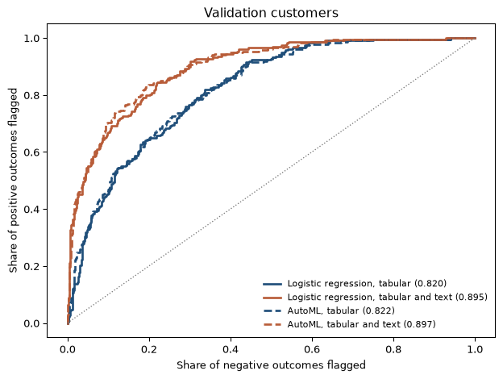
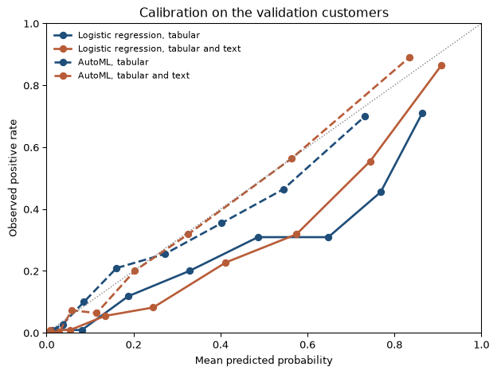

Send the same customers to a cloud service and compare the probabilities
Chapters 5 and 6 left two kinds of information.
The customer tables, and the quantities that split them into fit rows and test rows.
The scores of those rows, and the campaign costs of the test rows.
The first objective is to gather both. Gemini is not used in this part. The fit table and the test table are what Gemini will receive. The comparison file is the test rows Gemini’s scores will be added to.
Telco is the example. Another dataset uses the same capital-letter names and other paths.
The only CLOUD_MODE line to edit is in Paths of the saved results. Leave it as "LOAD". "LOAD" reads files already on this computer. "SAVE" rebuilds those files on this computer. Neither value calls Google. A later cell repeats "LOAD" so that the final read does not rebuild. The only line that spends money is START_PAID_TRAINING = True, in the Gemini section.
Money is spent only if you change that line
Rendering this file does not create a Google resource and does not start a training job.
Run the cells from top to bottom.
7.1 Retrieval of the data
7.1.1 Paths, columns, and the split
use_course_example() takes no input. It fills every capital-letter name with the telco example. It returns nothing. The assignments under it are the values the next functions read. Replace them for another dataset.
TABULAR_FILE is one row per customer. TEXT_FILE is one row per message. ID_COLUMN is the shared identifier. TARGET_COLUMN is the outcome. POSITIVE_LABEL is the label counted as a leave. In the example that label is Yes, later coded 1.
TEXT_COLUMN is the message. TEXT_ORDER_COLUMN numbers one customer’s messages. TEXT_TYPE_COLUMN names the kind of message. Set it to "" when the file has no such column. TEXT_FEATURE is the name of the joined-text column this lesson will add. It is not a column of the source files.
NUMERIC_FEATURES and CATEGORICAL_FEATURES are the predictors. Do not put ID_COLUMN or TARGET_COLUMN in those lists.
RANDOM_STATE is the seed. TEST_SIZE is the share of customers held out of the fit. Chapter 5 used 42 and 0.25. The same two numbers rebuild that split.
Working directory: /Users/heuchennecedric/Documents/data-extraction-lesson
Setting
Value
0
CLOUD_MODE
LOAD
1
TABULAR_FILE
data/raw/telco/telco_customers.csv
2
TEXT_FILE
data/raw/telco/customer_communications.csv
3
ID_COLUMN
customerID
4
TARGET_COLUMN
Churn
5
POSITIVE_LABEL
Yes
6
NUMERIC_FEATURES
tenure, MonthlyCharges, TotalCharges
7
CATEGORICAL_FEATURES
gender, SeniorCitizen, Partner, Dependents, Ph...
8
TEXT_FEATURE
customer_text
9
SPLIT_COLUMN
ml_split
10
OBSERVED_COLUMN
observed_outcome
11
MODEL_ROWS_ID_COLUMN
customer_id
12
GCS_PREFIX
telco-automl
13
RANDOM_STATE
42
14
TEST_SIZE
0.25
15
HOLDOUT_VALIDATION_FRACTION
0.5
16
PLATFORM_VALIDATE_FRACTION
0.1
17
PLATFORM_TEST_FRACTION
0.1
18
DECISION_THRESHOLD
0.5
19
OPTIMIZATION_OBJECTIVE
minimize-log-loss
20
BUDGET_MILLI_NODE_HOURS
1000
21
INCLUDE_TEXT_ONLY
False
22
BUDGET
8000.0
23
ECONOMICS_FILE
data/processed/telco/campaign_example_populati...
24
SAVED_PROBABILITY_FILE
data/processed/telco/test_probabilities_with_t...
25
MODEL_ROWS_FILE
data/processed/telco/model_rows.csv
26
OUTPUT_DIR
data/processed/telco/automl
7.1.2 Gather the two files
gather_sources() takes no argument. It reads the paths and column names above. It sorts each customer’s messages by TEXT_ORDER_COLUMN, joins them with a blank line, and stores the text in customer_text (TEXT_FEATURE). It returns one row per customer. It does not split. It does not call Google.
Tabular file: data/raw/telco/telco_customers.csv
Text file: data/raw/telco/customer_communications.csv
Blank numeric values replaced with zero: 0
Gathered 7043 customers. Joined messages are in customer_text.
customerID
Churn
customer_text
0
7590-VHVEG
No
**Customer:** I am calling about the service. ...
1
5575-GNVDE
No
**Agent:** Support here. I can help with the s...
7.1.3 Separate fit rows and test rows
separate_fit_test(customers) takes the table just returned. It also reads RANDOM_STATE, TEST_SIZE, ID_COLUMN, TARGET_COLUMN and POSITIVE_LABEL. It returns two tables, fit_table and test_table. The split is stratified on the target. A row in test_table was not used to fit the Chapter 5 models. The row counts are the Chapter 5 counts when the seed and TEST_SIZE are unchanged.
fit_table is the table Gemini will train on. test_table is the table from which the scored customers are taken.
Training rows: 5282. Test rows: 1761. Random seed: 42.
Fit rows: 5282
Test rows: 1761
7.2 Retrieval of the previous results
The scores and the campaign quantities are loaded here. p1, cost and loss are not model scores. Chapter 6 stored them for the test customers. They are loaded now because the comparison at the end uses them, and only them, as the campaign inputs.
7.2.1 Paths of the saved results
MODEL_ROWS_FILE is the file Chapter 5 writes with save_model_rows. One row per customer. role is fit or test. p_logistic_tabular is the structured-fields score. p_logistic_text is the score that also uses the communications. observed_outcome is 1 or 0. MODEL_ROWS_ID_COLUMN is the identifier column of that file. In the example it is customer_id. ID_COLUMN in the customer table is customerID. The two names are joined. The example path is data/processed/telco/model_rows.csv. Until that cell in Chapter 5 has been run, the file is absent. This lesson then uses SAVED_PROBABILITY_FILE for p_logistic_text and refits the tabular score when CLOUD_MODE is "SAVE".
SAVED_PROBABILITY_FILE is the file save_scores (in Chapter 5) wrote for Chapter 6. In the example, p0 (SAVED_PROBABILITY_COLUMN) is p_logistic_text on the test rows, and observed_outcome (SAVED_OUTCOME_COLUMN) is the same 0/1 outcome. SAVED_PROBABILITY_ID is the identifier column of that file.
ECONOMICS_FILE is Chapter 6’s POPULATION_FILE. ECONOMICS_P1_COLUMN (p1) is the probability of staying if contacted. ECONOMICS_COST_COLUMN (example_cost) becomes cost. ECONOMICS_LOSS_COLUMN (example_loss) becomes loss. The file has the test customers, not the fit customers.
HOLDOUT_VALIDATION_FRACTION = 0.5 keeps half of test_table for the comparison file. The other half is not scored. The comparison customers stay out of the training upload: the model Gemini keeps can be fit again on every uploaded row. OUTPUT_DIR is the folder of the files this lesson writes.
OBSERVED_COLUMN is the 0/1 column of the comparison file. 1 means TARGET_COLUMN equals POSITIVE_LABEL. In the example, 1 means Churn is Yes: the customer left. The functions read OBSERVED_COLUMN. Change TARGET_COLUMN in Paths, columns, and the split to use another outcome.
CLOUD_MODE has two values. "LOAD" reads validation_probabilities.csv and the Gemini files in OUTPUT_DIR. "SAVE" rebuilds those files. The assignment below is the only line to edit. The later cells read it. After a rebuild, set this line back to "LOAD" before Add the Gemini scores to the comparison file.
DECISION_THRESHOLD = 0.5 means a score of at least 0.5 is counted as a predicted leave. The comparison section uses it. The probabilities themselves are not changed by it.
automl.MODEL_ROWS_FILE ="data/processed/telco/model_rows.csv"automl.MODEL_ROWS_ID_COLUMN ="customer_id"automl.OBSERVED_COLUMN ="observed_outcome"automl.SAVED_PROBABILITY_FILE ="data/processed/telco/test_probabilities_with_text.csv"automl.SAVED_PROBABILITY_ID ="customer_id"automl.SAVED_PROBABILITY_COLUMN ="p0"automl.SAVED_OUTCOME_COLUMN ="observed_outcome"automl.ECONOMICS_FILE ="data/processed/telco/campaign_example_population.csv"automl.ECONOMICS_ID_COLUMN ="customer_id"automl.ECONOMICS_P1_COLUMN ="p1"automl.ECONOMICS_COST_COLUMN ="example_cost"automl.ECONOMICS_LOSS_COLUMN ="example_loss"automl.HOLDOUT_VALIDATION_FRACTION =0.5automl.DECISION_THRESHOLD =0.5automl.OUTPUT_DIR ="data/processed/telco/automl"# Only line to edit. Use exactly "LOAD" or exactly "SAVE".# "LOAD" reads the files. "SAVE" rebuilds them. Neither calls Google.automl.CLOUD_MODE ="LOAD"
7.2.2 Attach the scores and the costs
retrieve_results(fit_table, test_table) takes those two tables. It reads the paths in the cell above.
It returns a dictionary.
retrieved["fit"] is the fit rows. p_logistic_tabular and p_logistic_text are filled when MODEL_ROWS_FILE exists. Fit rows have no p1, cost or loss: Chapter 6 did not store campaign quantities for them.
retrieved["test"] is every test row. p_logistic_text comes from MODEL_ROWS_FILE, or from p0 in SAVED_PROBABILITY_FILE. p1, cost and loss come from ECONOMICS_FILE. Without MODEL_ROWS_FILE, p_logistic_tabular is filled only on the comparison rows. The other test rows have that column empty.
retrieved["comparison"] is the share HOLDOUT_VALIDATION_FRACTION of the test rows. This is the file Gemini will complete. write=True writes it to OUTPUT_DIR/validation_probabilities.csv. write=False reads that file and fits no model.
retrieve_results does not read CLOUD_MODE. The argument write does. write_files is that argument. It is True only when the line above is exactly "SAVE".
# Do not assign CLOUD_MODE here. This reads the line in the cell above.write_files = automl.CLOUD_MODE =="SAVE"retrieved = automl.retrieve_results(fit_table, test_table, write=write_files)print("Fit rows:", len(retrieved["fit"]))print("Test rows:", len(retrieved["test"]))print("Comparison rows:", len(retrieved["comparison"]))retrieved["comparison"].head(2)
Loaded validation_probabilities.csv. No model was fitted.
Fit rows: 5282
Test rows: 1761
Comparison rows: 880
customerID
observed_outcome
p_logistic_tabular
p_logistic_text
p1
cost
loss
p_automl_tabular
p_automl_text
0
7996-BPXHY
0
0.116089
0.053209
0.046685
30.0
300.0
0.040444
0.022887
1
0376-YMCJC
1
0.773286
0.557476
0.430424
30.0
1087.2
0.528902
0.241196
validation_probabilities.csv holds the comparison rows and the local columns: ID_COLUMN, OBSERVED_COLUMN, p_logistic_tabular, p_logistic_text, p1, cost and loss. In the example those first two names are customerID and observed_outcome. A Gemini score is added later, by import_saved_scores or by the paid cell.
7.3 Gemini
Gemini, in this lesson, is the tabular AutoML service on Google Cloud. In the console the menu is Vertex AI. Some pages say Gemini Enterprise Agent Platform. The Python package is google-cloud-aiplatform. It is not the chat model.
You send fit_table. The service searches among model types and keeps one model. You then send the comparison rows, with no target. It returns a probability that the row has the positive label. In the example that label is Yes in Churn: the customer left. That probability is written back into validation_probabilities.csv.
Project. The container for the job, the files, and the bill.
Billing account. Training is refused until one is linked.
Region. The group of data centers. This lesson uses us-central1. The stored files and the job use the same region.
7.3.2 The API
An API is the list of requests a program may send. The requests used here are: store this table, train a classification model, score this other table, delete what was created.
Enable the two APIs. Enabling them does not upload customers and does not train.
On Windows, activate with .venv\Scripts\activate. Reading the saved comparison does not need these packages.
google-cloud-aiplatform is the Python client for Vertex AI. run_cloud() uses it to create the dataset, start the training job, and start the batch prediction. google-cloud-storage is the Python client for the bucket. run_cloud() uses it to upload the training CSV and to download the score file. Installing the packages does not upload a table and does not start a job. The bucket itself is created later, with the gcloud storage buckets create command.
Sign in from the terminal in the next section. Do not put a key file in this project folder.
7.3.3 Quantities the job reads
BUDGET_MILLI_NODE_HOURS is the training cap, in milli node hours. A node is one machine Google starts for the search, then stops. A node hour is that machine working for one hour. 1000 milli node hours =1 node hour. 1000 is the smallest cap the service accepts. This lesson also refuses a value above 72000. The cap is the maximum machine-time of the search. The search keeps the best model found inside the cap. It is not a memory size. Scoring the comparison rows is a second machine and is not part of this number.
PLATFORM_VALIDATE_FRACTION = 0.10 and PLATFORM_TEST_FRACTION = 0.10 label the fit rows only. Gemini requires a column ml_split with the labels TRAIN, VALIDATE and TEST. Ten percent of the fit rows are VALIDATE, ten percent are TEST, and the rest are TRAIN.
These labels are not test_table.
OPTIMIZATION_OBJECTIVE = "minimize-log-loss" tells the search to prefer probabilities that match OBSERVED_COLUMN.
SPLIT_COLUMN is the column this lesson adds to each training file. The service reads it. The labels are TRAIN, VALIDATE and TEST. It is not a predictor. The example name is ml_split.
GCS_PREFIX is the first folder inside the bucket. It is not a column of the table, and it is not a model. The example is telco-automl. One run writes its files under that folder, then under a timestamp. Set another prefix when a second dataset should not share the first dataset’s folder.
INCLUDE_TEXT_ONLY = False leaves out a third model that would use TEXT_FEATURE alone. True adds one more cap and a column p_automl_text_only. In the example TEXT_FEATURE is customer_text.
BUDGET = 8000 is the campaign budget from Chapter 6, in the same unit as cost. It is not the training cap.
manifest.json is a local file in OUTPUT_DIR. It is the record of the upload. It is not the training table. build_gemini_files(..., write=True) writes it. write=False leaves the file as it is.
The fields the next steps read are:
budget_milli_node_hours, the training cap. The paid job reads this number, not the Python name BUDGET_MILLI_NODE_HOURS.
experiments, the paths of training_*.csv and predict_validation_*.csv.
validation_ids, the comparison customers, in the order of validation_probabilities.csv.
n_training, n_validation, n_final_test, and split_summary.
Changing BUDGET_MILLI_NODE_HOURS in the cell below changes the Python name only. To put the new number into manifest.json, set the one CLOUD_MODE line, in Paths of the saved results, to "SAVE". Then run the cells from that line through The two uploads. Then set that same line back to "LOAD". Do not add a second CLOUD_MODE assignment in this cell. "SAVE" rebuilds the local files. It does not call Google, and it is not a new dataset.
active_settings() takes no argument. It reads the capital-letter names and returns a table with columns Setting and Value. It does not write a file and it does not call Google.
7.3.4 The two uploads
build_gemini_files(retrieved) takes the dictionary from retrieve_results. With write=True it also reads the quantities in the cell above, including SPLIT_COLUMN. GCS_PREFIX is not written into these files. It is the folder used later, in the bucket.
It writes, in OUTPUT_DIR:
File
Rows
What Gemini does with it
training_tabular.csv
fit rows
Train on the structured fields. SPLIT_COLUMN is included. ID_COLUMN is not a predictor.
training_tabular_text.csv
the same fit rows
The same training, plus TEXT_FEATURE.
predict_validation_tabular.csv
comparison rows
Score these rows. The target is not in the file.
predict_validation_tabular_text.csv
the same comparison rows
The same scoring, plus TEXT_FEATURE.
The comparison rows are not in the training file. The model Gemini keeps can be fit again on every uploaded row, so a customer who is in both files would not be a clean test. The other half of test_table is final_test_ids.csv. It is not uploaded.
build_gemini_files returns the first rows of training_tabular_text.csv. TEXT_FEATURE is cut to 140 characters on screen. In the example that column is customer_text. With write=False it only reads the files already saved.
The service accepts at least 1,000 training rows. With TEST_SIZE = 0.25, TABULAR_FILE needs more than about 1,400 customers.
# Do not assign CLOUD_MODE here. Same line as in "Paths of the saved results".# "SAVE" rewrites manifest.json, including budget_milli_node_hours.# "LOAD" reads the training file already on disk.preview = automl.build_gemini_files(retrieved, write=(automl.CLOUD_MODE =="SAVE"))preview
customerID
tenure
MonthlyCharges
TotalCharges
gender
SeniorCitizen
Partner
Dependents
PhoneService
MultipleLines
...
DeviceProtection
TechSupport
StreamingTV
StreamingMovies
Contract
PaperlessBilling
PaymentMethod
customer_text
Churn
ml_split
0
3704-IEAXF
72
53.65
3784.0
Female
0
Yes
Yes
No
No phone service
...
No
Yes
Yes
Yes
Two year
No
Credit card (automatic)
**Customer:** I am calling about the service. ...
No
TRAIN
1
5175-AOBHI
4
46.00
193.6
Female
0
No
No
Yes
No
...
No
No
No
No
Month-to-month
Yes
Mailed check
**Subject:** Your monthly bill — $46.00 Hello...
Yes
TRAIN
2 rows × 23 columns
The same local rebuild, from a terminal, does not call Google:
python python/workshop_automl.py prepare
prepare() runs gather_sources, separate_fit_test, retrieve_results(write=True) and build_gemini_files(write=True). It returns the check table from verify_saved_files().
7.3.5 What is billed
Three cloud objects appear after a search. Only one of them holds the fitted parameters.
Training pipeline. The search itself. It tries model types until the cap, or until early stopping. It is billed in node hours, up to BUDGET_MILLI_NODE_HOURS for each experiment. It does not keep a machine after it finishes.
Model. The registry entry written when the pipeline reaches PIPELINE_STATE_SUCCEEDED. This entry holds the fitted parameters: the chosen model and the numbers that turn a row into a probability of leaving. It is not a running computer. An entry that is only stored is not billed as a prediction machine.
Batch prediction. A machine that starts, loads that same registry entry, scores the comparison file, writes the score file into the bucket, and stops. The bill is the time that machine runs. This is the scoring step this lesson uses.
Endpoint. A second way to use the same registry entry. Deployment means loading the saved model onto a machine that stays on and answers one request at a time. The bill is the hours from that deployment until undeploy, which takes the model off the machine and stops the hourly charge. This lesson does not create an endpoint and does not deploy.
The fitted parameters stay in the model registry. The endpoint and the batch job are only machines that load those parameters. The endpoint is for repeated single requests. The batch job is for one file. The comparison needs one file, so the lesson builds a batch job and does not build an endpoint.
Bucket. A named folder on Google’s disks. The training CSV is copied there. The scores are written there, then copied back.
Prefix. The path of this lesson’s files inside the bucket. GCS_PREFIX is only the first folder. You set it in Quantities the job reads. In the example it is telco-automl. The bucket name is BUCKET. A run then adds its own timestamp, and each experiment adds its own file. The prefix is not a model and it is not a separate charge. The charge is the storage of the files under that path.
The tabular training file of the first run is (in my account) :
my-aidata-course-bucket is BUCKET. telco-automl is GCS_PREFIX. 20261119T050528Z is the run id. training_tabular.csv is the upload. The scores of that same run are further along the same path, in tabular/predictions/, in the files named prediction.results-.
Node hour. Defined above. Each of the two searches is capped at BUDGET_MILLI_NODE_HOURS. Each search is followed by one batch prediction. A cancelled job is billed for the machine-time already used. Another training failure is not billed.
The prediction price list has a standard virtual machine and a Spot virtual machine for the same machine type: https://cloud.google.com/products/gemini-enterprise-agent-platform/pricing#prediction-and-explanation. A virtual machine is one computer. A Spot virtual machine is spare capacity, so its hourly price on that page is the lower one. Google can take a Spot machine back. That interruption is preemption. The preempted time is not billed.
This lesson does not request a Spot machine. The training search is billed as AutoML node hours, up to the cap. It is not a virtual machine you choose on that page. Scoring uses one standard machine, and only after a model exists.
The search has no pause. PIPELINE_STATE_RUNNING means it continues with no further command. PIPELINE_STATE_SUCCEEDED means the model is saved. PIPELINE_STATE_CANCELLED means the search was stopped. A cancelled or failed search does not continue later. Another search is a new training pipeline, from the beginning. The partial search is not handed to another machine.
A Spot machine is useful when the lower hourly price still wins after some jobs are started again, and when you can wait. Custom training that writes a checkpoint can continue from that checkpoint on the next machine. A short scoring job can be cheaper on Spot even if a preempted job has to start again, because the preempted time is not billed.
That is not this lesson. The AutoML search does not give you a checkpoint to pass to a replacement machine. If it is stopped, the next search starts over. A preempted scoring job also starts over: the replacement machine does not receive the unfinished score file as a place to continue. The saved model stays, so scoring starts again and the search does not. For these two tasks, a partial result is not reused. Spot would only change the price of a job that may have to be launched again.
explain_costs() takes no argument. It reads BUDGET_MILLI_NODE_HOURS, GCS_PREFIX, and the experiment list in manifest.json when that file exists. It returns one complete paragraph per component: the name, what is billed, and what this run does. It does not start a job and it does not compute a dollar amount. The dollar amount is the price on the pricing page in Account, project, and bill (above) times the node hours actually used. cost_table() returns the same facts as a table.
print(automl.explain_costs())
Experiment A, tabular AutoML. What is billed: Training node hours, up to the cap, and batch-prediction node hours. This run: Training cap 1 node hour, then one batch prediction.
Experiment B, tabular AutoML plus text. What is billed: Training node hours, up to the cap, and batch-prediction node hours. This run: Training cap 1 node hour, then one batch prediction.
Online endpoint. What is billed: Node hours from deployment until the model is undeployed. This run: Not created.
Cloud Storage. What is billed: Storage of the uploaded CSV files and the prediction output. This run: The files of one run are stored at gs://<bucket>/telco-automl/<run id>/.
Model registry. What is billed: A model that is not deployed is not charged for prediction. This run: Created. Delete it with the cleanup command when you are finished.
Close the terminal and open it again in the project folder.
PROJECT_ID, REGION and BUCKET are names in the next cell, not columns. PROJECT_ID is the project id from Account, project, and bill above. REGION is the region. BUCKET is the bucket name you choose. It must be new, and it may contain only lowercase letters, numbers and hyphens. The cell prints commands. It does not run them.
gcloud auth application-default login opens a browser. Sign in with the account that owns the project. Wait until the terminal says the credentials were saved.
7.3.7 Train and score
The next cell uploads the training file, trains the tabular model, scores the comparison rows, then repeats that for the file that includes TEXT_FEATURE. In the example, TEXT_FEATURE is customer_text.
The score in the bucket is TARGET_COLUMN, then _, then POSITIVE_LABEL, then _scores. In the example that column is Churn_Yes_scores. A result file that uses _score is accepted as well. The copy in the next section writes that value onto the matching ID_COLUMN in validation_probabilities.csv.
p_automl_tabular is that score for the structured fields.
p_automl_text is that score for the structured fields plus TEXT_FEATURE.
Leave START_PAID_TRAINING as False until billing is linked, both APIs are enabled, sign-in has finished, and the bucket exists. Waiting for a job to start can take longer than the one-hour cap. The cap limits the training machine, not that wait. The cell runs the tabular search first. After that pipeline succeeds, the same cell starts the search that includes TEXT_FEATURE. The second search does not start by itself if this cell has stopped. Run the cell again with the switch still True. An experiment whose score column is already complete is skipped. A recorded model is not trained again. The text search starts when that model is not recorded yet.
Another dataset uses the same cell after its own files exist. The cells through build_gemini_files must already have been run for that dataset, with its paths and column names. Then set PROJECT_ID, REGION, BUCKET and GCS_PREFIX. REGION and the bucket must match. Also give that dataset its own OUTPUT_DIR, or delete cloud_resources.json in the current folder. Otherwise the paid cell scores with the model already recorded there.
The text model of the example has not been trained, and it has no score file in the bucket. The tabular column p_automl_tabular is already in the comparison file, so the next paid run skips that search. It trains the text model, which is a new charge of up to one node hour, then scores the comparison rows. When that cell finishes, p_automl_text is in validation_probabilities.csv. If the score files are in the bucket and the column is still missing, run import_saved_scores("tabular_text").
Select the project in the console and set the region to the value of REGION. A pipeline list for another region is empty.
run_cloud(approve_spend=True) runs only when the switch is True. The argument and the environment name AUTOML_APPROVE_SPEND=yes are both required. The function also reads GOOGLE_CLOUD_PROJECT, GOOGLE_CLOUD_REGION and GOOGLE_CLOUD_BUCKET, which the cell sets from PROJECT_ID, REGION and BUCKET. It reads manifest.json for the file paths and for the training cap. It returns 0 when the scores are saved, 1 when the local files are missing or the training file has fewer than 1,000 rows, and 2 when the approval is missing.
START_PAID_TRAINING =Falseos.environ["GOOGLE_CLOUD_PROJECT"] = PROJECT_IDos.environ["GOOGLE_CLOUD_REGION"] = REGIONos.environ["GOOGLE_CLOUD_BUCKET"] = BUCKETif START_PAID_TRAINING: os.environ["AUTOML_APPROVE_SPEND"] ="yes" automl.run_cloud(approve_spend=True)else: os.environ["AUTOML_APPROVE_SPEND"] ="no"print("Training was not started. No Google call was made.")
Training was not started. No Google call was made.
The same job from the terminal:
exportGOOGLE_CLOUD_PROJECT=YOUR_PROJECT_IDexportGOOGLE_CLOUD_REGION=us-central1exportGOOGLE_CLOUD_BUCKET=YOUR_BUCKETexportAUTOML_APPROVE_SPEND=yespython python/workshop_automl.py run --approve-spend
On Windows PowerShell:
$env:GOOGLE_CLOUD_PROJECT="YOUR_PROJECT_ID"$env:GOOGLE_CLOUD_REGION="us-central1"$env:GOOGLE_CLOUD_BUCKET="YOUR_BUCKET"$env:AUTOML_APPROVE_SPEND="yes"python python/workshop_automl.py run --approve-spend
7.3.8 Copy a finished batch prediction into the comparison file
import_saved_scores(experiment) reads one finished batch prediction and writes its positive-class score into validation_probabilities.csv.
experiment is "tabular" or "tabular_text". "tabular" writes p_automl_tabular. "tabular_text" writes p_automl_text. The bucket path is gcs_predictions in cloud_resources.json. The files read are those named prediction.results-. Error tables and temporary files in the same folder are left unread.
The call does not train a model and does not start a batch prediction. Run the same cell again after a later job. The column already in the file is replaced. "tabular_text" waits until that second batch prediction has written its files.
Wrote p_automl_text for 880 comparison customers from gs://my-aidata-course-bucket/telco-automl/20261119T172255Z/tabular_text/predictions/.
customerID
p_automl_text
0
7996-BPXHY
0.022887
1
0376-YMCJC
0.241196
7.3.9 Add the Gemini scores to the comparison file
load_workshop() takes no argument. It reads CLOUD_MODE and OUTPUT_DIR. "LOAD" opens manifest.json and validation_probabilities.csv. "SAVE" runs prepare() again and fits the tabular model a second time. "RUN" is refused. The paid call is run_cloud().
This cell is not a third switch. Keep the assignment below as "LOAD". The line you edit is still the one in Paths of the saved results. If that line is "SAVE" when this cell runs, load_workshop() rebuilds the files again.
It returns a dictionary. state["probabilities"] is the comparison file, one row per comparison customer. A column written by import_saved_scores is on those rows. state["split_summary"] counts the fit rows, the test rows, the comparison rows, the unused test rows, and the three ml_split labels. state["automl_columns"] lists the Gemini columns present in the file.
# Keep "LOAD". Do not use this line to rebuild.# The rebuild line is CLOUD_MODE in "Paths of the saved results".automl.CLOUD_MODE ="LOAD"state = automl.load_workshop()state["probabilities"].head(2)
Loaded saved AutoML probabilities from validation_probabilities.csv.
customerID
observed_outcome
p_logistic_tabular
p_logistic_text
p1
cost
loss
p_automl_tabular
p_automl_text
0
7996-BPXHY
0
0.116089
0.053209
0.046685
30.0
300.0
0.040444
0.022887
1
0376-YMCJC
1
0.773286
0.557476
0.430424
30.0
1087.2
0.528902
0.241196
Column
What it is
Where it comes from
customerID
Identifier
ID_COLUMN in the example
observed_outcome
1 when TARGET_COLUMN equals POSITIVE_LABEL, else 0
OBSERVED_COLUMN. In the example, the customer left
p_logistic_tabular
Logistic score, structured fields
MODEL_ROWS_FILE, or a refit on SAVE
p_logistic_text
Logistic score, fields plus communications
p0 in SAVED_PROBABILITY_FILE
p1
Probability of staying if contacted
ECONOMICS_FILE
cost
Contact cost
example_cost
loss
Loss if the customer leaves
example_loss
p_automl_tabular
Gemini score, structured fields
import_saved_scores("tabular"). The bucket column is TARGET_COLUMN, _, POSITIVE_LABEL, _scores. In the example, Churn_Yes_scores.
p_automl_text
Gemini score, fields plus TEXT_FEATURE
import_saved_scores("tabular_text"), after that batch prediction exists
p1, cost and loss do not change when the score changes.
7.3.10 Compare the scores
Accuracy, precision and recall use DECISION_THRESHOLD. ROC-AUC, PR-AUC, log-loss and the Brier score do not. They use OBSERVED_COLUMN and the score column. ROC-AUC and PR-AUC describe the ranking. Log-loss, the Brier score and the calibration plot describe the probabilities. The campaign calculation uses the probability. In the example, OBSERVED_COLUMN is observed_outcome and 1 means the customer left.
In Chapter 5, under The idea, before the command, each fit row is weighted in the log-likelihood by 1 / (2 × the share of its own class). Leavers are fewer, so each leaver has the larger weight, and the two classes have the same total weight. The Gemini models fit without those weights. On the calibration plot, the logistic curve and the Gemini curve are scores from those two fits.
PR-AUC. Chapter 5, under Ranking, across cutoffs, defines ROC-AUC as the probability that a random leaver receives a higher score than a random stayer. That is one leaver compared with one stayer. PR-AUC reads the list those scores produce. Order the comparison customers from the highest score to the lowest. Pick a leaver at random, each leaver equally likely. Keep that leaver and every customer ranked at least as high. Customers with the same score are kept together. Precision at that leaver is the share of the kept group who left. PR-AUC is the expected value of that precision. It is the area under the precision-recall curve: as the cutoff moves, recall is the share of leavers who are kept, and precision is the share of the kept group who left. A value of 1 means the kept group contains only leavers, whichever leaver is chosen. A ranking with no link to the outcome has PR-AUC equal to the share of leavers in the comparison rows. ROC-AUC can stand well above one half while this expected precision stays near that share, because many stayers can still sit above a leaver. The column PR-AUC in the next table is this average.
metrics_table(state["probabilities"]) takes the comparison table and reads DECISION_THRESHOLD. It uses every score column that is present. It returns one row per model.
automl.metrics_table(state["probabilities"])
Model
ROC-AUC
PR-AUC
Accuracy
Precision
Recall
Log-loss
Brier
0
Logistic regression, tabular
0.820054
0.588996
0.718182
0.479784
0.763948
0.524487
0.180377
1
Logistic regression, tabular and text
0.894581
0.770293
0.797727
0.586207
0.802575
0.406906
0.132515
2
AutoML, tabular
0.821686
0.607995
0.789773
0.625000
0.515021
0.440350
0.145734
3
AutoML, tabular and text
0.897208
0.777077
0.844318
0.755319
0.609442
0.347257
0.108917
plot_roc(state["probabilities"]) takes the same table. It returns one curve per score column. The number in the legend is the ROC-AUC. The vertical axis is the share of positive outcomes flagged. The horizontal axis is the share of negative outcomes flagged. In the example, a positive outcome is a customer who left.
automl.plot_roc(state["probabilities"])

plot_calibration(state["probabilities"]) takes the same table. It returns a figure: mean predicted probability against the share of those customers with OBSERVED_COLUMN equal to 1.
automl.plot_calibration(state["probabilities"])

Until the paid cell has run, the displays contain the two logistic models. After it has run, run the three cells again. Compare tabular logistic regression with tabular Gemini. Separately, compare the communications logistic regression with Gemini plus TEXT_FEATURE. The table is the result.
7.3.11 Does the campaign decision change?
The calculation uses p1, cost, loss and BUDGET. Only the churn score changes: once p_logistic_tabular, once p_logistic_text, and, when those columns exist, once p_automl_tabular and once p_automl_text.
The Chapter 6 rule is unchanged. Target the customer when the expected loss avoided by the campaign is larger than cost.
economic_table(state["probabilities"]) takes the comparison table. It reads BUDGET, OBSERVED_COLUMN, p1, cost, loss and each score column. It returns one row per model: ROC-AUC, customers targeted, spend, expected cost, and the same figures under BUDGET. summary is that table.
Expected cost and Expected net benefit use the score as \(p_0\). Logistic regression and the Gemini search are fitted to the probabilities of the outcome. They are not fitted to this cost. A higher score raises \(b_i = L_i(p_{0,i} - p_{1,i}) - c_i\). The smallest expected cost is then a property of those estimated probabilities. It is not a reason to prefer the model.
realized_cost_table(state["probabilities"]) keeps p1, cost and loss fixed and reads OBSERVED_COLUMN. With no campaign, a customer who left costs loss and a customer who stayed costs 0. The contact list is still the Chapter 6 list for that score. For a selected customer who left, loss is replaced by cost + loss * p1. For a selected customer who stayed, the cost is cost. Net benefit is the no-campaign total minus the with-campaign total. The budget columns use the contact list that respects BUDGET. p1 is held as given. The table accounts for the historical outcomes under that fixed p1. It does not measure the effect of a campaign.
The probability summaries and realized_cost_table answer two questions.
ROC-AUC, PR-AUC, log-loss, the Brier score and the calibration plot ask whether the score orders the customers and matches the share who left. On these comparison rows, the Gemini model that uses TEXT_FEATURE is ahead on those four summaries. The logistic model with the communications is close behind it. The two tabular models follow both.
realized_cost_table asks the Chapter 6 question. The score only builds the contact list, through \(L_i(p_{0,i} - p_{1,i}) > c_i\). The money is then computed from who left, with p1 held fixed. On this file the communications logistic contacts 204 leavers and 275 stayers, and its net benefit is the largest, about 66,000. The Gemini model with text contacts 120 leavers and 42 stayers. That list is more concentrated on leavers. Its net benefit is smaller, about 40,000, because more of the historical leavers are left uncontacted and each of them still costs loss. The same order remains under BUDGET.
Chapter 6 is the step between the two readings. A gain in ROC-AUC does not name the customers worth a contact. The loss, the contact cost and p1 can place two customers with the same score on opposite sides of the rule. The realized table is that rule applied to the people who left in this comparison set.
Use that table when the customers about to be contacted resemble these comparison rows, and when p1, cost and loss stay the ones used here. The overlap between a contact list and the historical leavers is a fact about this cohort. It is the relevant business comparison for a cohort of the same kind.
A cohort with a different churn share, different losses, or a different effect of a contact need not repeat that overlap. The Chapter 6 rule is then applied again, to new scores and to the new costs. The model that estimates the probabilities well is the more reliable input to that rule. A list that caught the leavers of this particular sample is tied to this sample.
p1 remains an assumption. The realized net benefit accounts for these historical outcomes under that assumption. It compares the contact lists on this cohort. It is not a measured effect of a campaign, and it is not a forecast for a cohort that does not look like this one.
7.3.12 Delete the cloud resources
When validation_probabilities.csv has the Gemini columns, the campaign calculation does not need the cloud model.
cleanup_cloud(approve_delete=True) runs only when DELETE_CLOUD_RESOURCES is True. It also requires AUTOML_APPROVE_DELETE=yes. It reads cloud_resources.json in OUTPUT_DIR, the names run_cloud() recorded. It returns 0 when nothing remains or the deletion finished, and 2 when the approval is missing.
DELETE_CLOUD_RESOURCES =Falseif DELETE_CLOUD_RESOURCES: os.environ["AUTOML_APPROVE_DELETE"] ="yes" automl.cleanup_cloud(approve_delete=True)else: os.environ["AUTOML_APPROVE_DELETE"] ="no"print("Nothing was deleted.")
The paid run also writes cleanup_commands.sh in OUTPUT_DIR. Then list the project:
gcloud ai endpoints list --region="$GOOGLE_CLOUD_REGION"gcloud ai models list --region="$GOOGLE_CLOUD_REGION"gcloud ai datasets list --region="$GOOGLE_CLOUD_REGION"# GCS_PREFIX is the folder set in the lesson. The example is telco-automl.exportGCS_PREFIX=telco-automlgcloud storage ls "gs://$GOOGLE_CLOUD_BUCKET/$GCS_PREFIX/**"
This lesson does not create an endpoint. If one is listed, billing continues until each deployed model is removed.
gcloud ai endpoints describe ENDPOINT_ID --region="$GOOGLE_CLOUD_REGION"gcloud ai endpoints undeploy-model ENDPOINT_ID \--deployed-model-id=DEPLOYED_MODEL_ID \--region="$GOOGLE_CLOUD_REGION"--quietgcloud ai endpoints delete ENDPOINT_ID --region="$GOOGLE_CLOUD_REGION"--quiet
To stop a job that is still running:
gcloud ai training-pipelines cancel TRAINING_PIPELINE_ID --region="$GOOGLE_CLOUD_REGION"--quietgcloud ai batch-prediction-jobs cancel BATCH_JOB_ID --region="$GOOGLE_CLOUD_REGION"--quiet